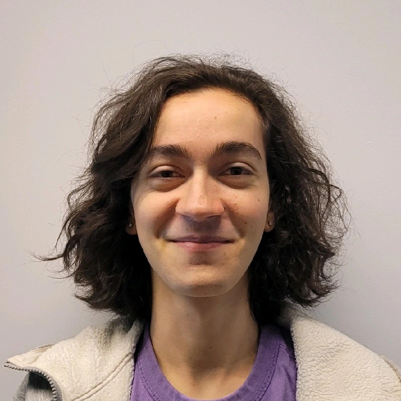

Hey! I'm Xander "Cookie" Akkari, a game developer and multimedia specialist in Sydney, Australia. I've been creative all my life, making all manner of games, comics, artwork and music as I grew up. This year, I'll be graduating with a Bachelor of Games Development at UTS with a High Distinction.
I'm currently working with Team Stingray, a team of fellow gamedev students who have produced fun and engaging games throughout our degree. We've been at the forefront of using the Godot game engine for our projects, going as far as to host educational workshops for it at UTS. We've even showcased these games at industry events like SXSW Sydney 2023 and 2024!
Aside from gamedev, I love video editing, music, and anything to do with Splatoon. My current side-gig is freelance video editing for YouTube.